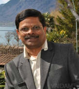

Dr. Sreekanta Swamy
QUALIFICATIONS
Senior Consultant, 35 years of experience , MBBS, MD, DM
ABOUT DOCTOR
Dr. Sreekanta Swamy is a renowned name in the field of neurology.
He has an experience of more than 35 years.
His clinical interests include Brain Surgery, Brain Mapping, Epilepsy Treatment, Stroke Treatment and Headache Treatment etc.
He has done his MBBS from University of Mysore, India in 1979 and MD - General Medicine from University of Mysore, India 1981.
SPECIALIZATION :
Brain Surgery
Brain Mapping
Epilepsy Treatment
Stroke Treatment
Headache Treatment
WORK EXPERIENCE
Consultant, Apollo Hospital, Bangalore
List Of Treatments
Temporal Lobectomy,
Lesionectomy,
Hemispherectomy,
Corpus Callosotomy,
Vagus Nerve Stimulation,
Multiple Subpial Transections MST,
VP Shunting,
Ventriculostomy,
Skull Base Surgery,
Sleep Disorders,
Restless Leg Syndrome Treatment,
Narcolepsy Treatment,
Headache,
Multiple Sclerosis Treatment,
Chronic Cerebro Spinal Venous Insufficiency Treatment,
Liberation Treatment,
Sensory Ataxia Treatment,
Cerebral Palsy - Stem Cell Treatment,
Craniotomy Surgery,
Cranioplasty,
Neural Stem Cell Therapy,
Autism - Stem Cell Treatment,
Muscular Dystrophy -...show all.